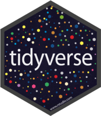

1. Arrumando os dados1. o Tidyverse2. Preparando os dados2.1 Operador de Encadeamento (PIPE)2.2 Tribble2.3 readr2.3.1 Exemplo PNAD2.3.2 Exemplo Microdado Censo 20102.4 Tidyr2.5 dplyr2.5.1 Select2.5.2 FiltroExercícios 2.5.1 Tente responder essas questões:2.5.3 Criação e Alteração2.5.4 Ordenação2.5.6 Join2.5.7 Sumarizar2.5.8 Agrupar2.5.9 União , Interseção e demais funções uteis2.5.10 Exercícios dplyr
1. Arrumando os dados
De agora em diante vamos usar como adotar como ferramenta de análise os pacotes do tidyverse , você provavelmente já deve ter usado alguma delas.
Mas antes vamos falar do seu criador chamado Hadley Wickham atualmente cientista chefe do RStudio e professor adjunto de estatística da Universidade de Auckland, na Nova Zelândia e mais recentemente das universidades de Stanford e Rice. Ele é um Cientista de Dados e é a mente responsável por vários pacotes do R, tanto pelo desenvolvimento quanto pelo aspecto conceitual desses pacotes. Um exemplo é o ggplot. A preocupação dele ao criar esses pacotes foi tornar o R uma ferramenta mais poderosa e fácil de utilizar para Data Science. Esses pacotes lhe valeram um convite para se tornar uma peça chave no desenvolvimento e rumos do RStudio.


Ele é autor do livro R for data science que pode ser encontrado na Amazon por cerca de US$ 25. No entanto, ele é um entusiasta não só de open source e de open science como também pratica o que prega e oferece seu livro gratuitamente no link http://r4ds.had.co.nz/ . O livro é muito bom e muito desse curso foi inspirado nele,
1. o Tidyverse
Diversos pacotes integram o tidyverse , cada pacote foi criado independente e depois foram integrados na forma desse "metapacote".
 
Alguns dos pacotes já são conhecidos por vocês como por exemplo o ggplot2 e talvez alguns conheçam o dplyr o importante é dizer que tudo que esses pacotes fazem pode ser feito também ou pelo modulo base do R ou por algum outro pacote.
Então qual a vantagem? Como dito anteriormente esse conjunto de pacotes guardam mais do que uma coerência, possuem um conceito que simplifica e torna mais objetiva a realização de tarefas de arrumar os dados (tidy , quer dizer arrumar , ajeitar). Nesses pacotes as funções que fazem as operações em geral são verbos que deixam clara as ações envolvidas. veja o exemplo abaixo:
mtcars %>% select (mpg,cyl,hp,wt) %>% group_by(cyl) %>% summarise(hp_media=mean(hp),hp_min=min(hp),hp_max=max(hp),consumo_medio=mean(mpg)/3.7)Em apenas uma linha estamos selecionando variáveis, agrupando por número de cilindros, e criado uma estatística sumária para a potência em HP e para o consume médio e transformando de galoes para litros(em 1974, aparentemente os carros bebiam muita gasolina!!!)
2. Preparando os dados
Nos podemos organizar nossos dados em diversas formas, em geral usamos um formato tabular.
Entretanto, com frequência os dados ao serem importados não estão no formato adequado para a análise ou produção de gráficos exploratórios sendo necessário arrumar o dado para que fique em ul formato adequando.
Sob o ponto de vista formal queremos que:
- Cada variável forme uma coluna
- Cada observação forme uma linha
- O conjunto de linhas forme uma tabela
Ou seja, em nossos dados uma coluna represente apenas uma variavel e uma linha uma observação formando uma tabela.
Veja as planilhas a planilha abaixo na qual cada coluna representa várias coisas, como sexo, ano e faixa etária.
ou nessa onde cada linha pode representa uma AP, um bairro ou o sexo
Veremos a seguir dois pacotes incluídos no tidyverse são empregados para arrumar os dados, são eles tidyr e dplyr possuem funções que nos permite de uma maneira fácil ajeitar e transformar os dados. Vamos a seguir conhecer um pouco deles.
Uma característica importante dos pacotes do tidyverse são que as funções empregadas são em geral verbos que exprimem ações, como veremos a seguir.
2.1 Operador de Encadeamento (PIPE)
Os pacotes do tideverse permitem o uso de encadeamento entre funções usando o operado %>% como uma maneira de passar o resultado de uma função para a função seguinte. Em computação esse tipo de operador é conhecido por PIPE
xxxxxxxxxxmtcars %>% head()
ou seja o data.frame mtcars e passado para a função seguinte, no caso head Esse operador permite encadearmos os resultados entre muitas funções e evita a necessidade de se armazenar repetidamente o resultado de cada função.
No formato normal de R um fluxo de análise em geral
xxxxxxxxxxdados <- read.csv('/caminho/documentos/arquivo.csv')dados <- subset(dados, var_a > x)dados <- transform(dados, var_c = var_a/var_b)dados <- aggregate(mtcars, by=list(var_a,var_b), mean, na.rm=TRUE)Usando o operador %>% teríamos algo como:
xxxxxxxxxxdados <- read.csv('/caminho/documentos/arquivo.csv') %>% subset( var_a > x) %>% transform( var_c = var_a/var_b) %>% aggregate(by=list(var_a,var_b), mean, na.rm=TRUE)Repare que não usamos nenhuma função do tidyverse apenas o modulo base do R, usando o PIPE com as funções dos pacotes do tidyverse temos maior flexibilidade ainda!
Vamos agora conhecer alguns dos pacotes que compõem o tideverse.
2.2 Tribble
Uma tribble (tbl_df) é uma classe criado com o objeto de atualizar um data.frame , mantendo o que ele tem de positivo e mudando aspectos que os autores julgam obsoletos ou não funcionais. Ele não substitui todos os métodos providos pelo data.frame , no entanto a tribble é mais rápida e possuí métodos aprimorados e mais modernos, seguros para utilizar e exibir tabelas.
Criando uma tribble
xlibrary(tidyverse)IMC <- data_frame( nomes = c("João", "Maria", "Carlos", "Ana"), idade = as.integer(c(27, 25, 29, 26)), sexo = as.factor(c('M','F','M','F')), altura = c(180, 170, 185, 169), peso = c(92.3,71.1,88.5,63.6), dt_nasc = lubridate::dmy(c('03/08/1990','15/12/1992','05-07-1988','06-08-1991')) , exercicio = c(TRUE, FALSE, FALSE, TRUE))O comando acima cria uma tribble a partir de vetores , exatamente como fariamso com um data.frame note entretanto que usamos a função data_frame
Vamos verificar agora o conteúdo desse objeto
xxxxxxxxxxIMC# A tibble: 4 x 7 nomes idade sexo altura peso dt_nasc exercicio <chr> <int> <fctr> <dbl> <dbl> <date> <lgl>1 João 27 M 180 92.3 1990-08-03 TRUE2 Maria 25 F 170 71.1 1992-12-15 FALSE3 Carlos 29 M 185 88.5 1988-07-05 FALSE4 Ana 26 F 169 63.6 1991-08-06 TRUENote que em primeiro lugar no output já nos informa que o objeto é uma tribble com 4 linhas e 7 colunas. Abaixo do nome de cada coluna temos o tipo, se é caractere, numérico (double, ou Integer) , fator, data ou lógico. Outra característica importante é que por default nenhuma caractere é convertido para factor como acontece atualmente por default nos data.frame
Vamos ver a classe a que pertence esse objeto:
xxxxxxxxxxclass(IMC)[1] "tbl_df" "tbl" "data.frame"repare que ele também pertence a classe data.frame assim a grande maioria das funções que usamos para manusear objetos da classe data.frame podem ser empregados também na classe tbl_df com algumas diferenças.
Para ilustrar as e similaridades vamos em primeiro lugar converter um data.frame e criar um objeto tribble.
xxxxxxxxxx iris_tb <- as_tibble(iris) # ou as_data_frame class(iris_tb)Vamos testar a indexação de ambas as classes
xxxxxxxxxx# data.frame iris$Species iris[[4]] iris[['Species']]# tribble iris_tb$Species iris_tb[[4]] iris_tb[['Species']]Como se pode notar o comportamento aqui é idêntico entre ambas.
xxxxxxxxxx iris$Sepal.L iris_tb$Sepal.LO que aconteceu? você sabe explicar?
Não sei se você se lembra mas em data.frame podemos nos referir ao nome de uma coluna de uma maneira parcial, desde que o nome seja inequívoco, no exemplo acima 'iris$Sepal.L' mostra somente a coluna 'Sepal.Length' , no entanto essa maneira não funciona nos objetos tribble.
uma outra diferença importante está no fato de que se pedirmos uma coluna inexistente a um data.frame esle retorna NULL no entanto não há nenhum erro e nem warning já a tribble retorna NULL mas gera um warning o que é importante quando estamos desenvolvendo funções.
xxxxxxxxxxiris$z # retorna NULL e não gera warningiris_tb$z # Warning Existem outras maneiras de criar uma tribble o exemplo abaixo mostra uma delas: Repare que ao invés de especificarmos os tipos simplesmente entramos com cada linha. a primeira linha deve ter o nome de cada coluna precedida por um ~ (til)
xxxxxxxxxx zika <- tribble( ~UF, ~Casos, ~Incidencia, "MG", 15211, 72.9, "ES", 2321, 59.1, "RJ", 67481, 407.7, "SP", 5612, 12.6 ) Mais uma diferença está no fato que tribble não possui nome de linha!
xxxxxxxxxxrow.names(zika)row.names(zika) <- letters[1:4]zikano entanto a função names continua funcionando como sempre.
xxxxxxxxxxnames(zika)names(zika) <- c('uf','cases','incidence')zikaPara vermos a estrutura dos dados podemos usar a função glimpse() que é a correspondente a função str() do modulo base.
xxxxxxxxxxglimpse(zika)Apesar de não existirem grandes diferenças entre data.frame e tribble como foi visto, a velocidade ,segurança e facilidades na visualização além do fato de pertencer ao tidyverse e seu ecossistemas de pacotes parecem bons motivos para sua utilização.
2.3 readr
O objetivo do pacote readr é prover uma maneira rápida e amigável para ler no R dados tabulares de diversos formatos tais como csv, tsv, fwf etc... Suas funções são desenhadas com flexibilidade para identificar os tipos de cada coluna e facilitar a identificação de problemas dentro dos dados (quebra de padrões)
o processo de importação dos dados passa por 3 estágios básicos:
- a leitura em um formato "retangular" , ou seja uma matriz de strings
- determinação do tipo de cada coluna
- transformações necessárias a cada coluna dado seu tipo
o pacote readr faz isso de uma maneira muito mais rápida que as tracionais funções do pacote básico, e além do mais permite facilmente especificar o formato das colunas de uma maneira mais simples e precisa.
o readr possui 5 funções básicas para ler os dados
- read_table() arquivos seprados por espaço
- read_csv() e read_csv2() para arquivos do tipo .csv separador por ',' ou ';'
- read_tsv() para arquvios separados por tabs (\t)
- read_fwf() para arquivos com formato fixo
Todas as funções possuem diversas opções de parâmetros para melhor especificar o formato dos dados. Existem também todas as funções para fazer a escrita, exemplo write_csv.
2.3.1 Exemplo PNAD
Vamos partir para um exemplo, ler um arquivo da Pesquisa Nacional Por Amostra de Domicílios (PNAD) de 2003. Esse arquivo consta de quase 400.000 registros e 39 variáveis , se encontra em formato CSV, compactado em formato ZIP.
xxxxxxxxxxlocal <- 'http://gitlab.procc.fiocruz.br/oswaldo/DS_2017/raw/master/exemplos/pnad.zip' Vamos fazer o download do arquivo acima como visto no capítulo de importação
xxxxxxxxxxtemp <- tempdir() # seleciona um diretorio temp arq <- paste(temp,'pnad.zip',sep='/') # gera o nome do arquivo download.file(local,arq) # faz o downloadAgora vamos fazer a importação propriamente dita
xxxxxxxxxxpnad <- read_csv2(unzip(arq))Observe que recebemos uma mensagem de warning
Using ',' as decimal and '.' as grouping mark. Use read_delim() for more control. Parsed with column specification: cols( .default = col_integer(), COD_PESS = col_double() ) See spec(...) for full column specifications.
A função está avisando duas coisas:
a. que usou ',' como separador decimal e '.' como separador de mil, e se quiseremos mais opções de controle devemos usar a função read_delim
b. que usou com default que todas as colunas eram de inteiros com exceção a variável COD_PESS que foi usado o tipo double
Vamos inspecionar o objeto que retornou
xxxxxxxxxx> pnad# A tibble: 384,834 x 39 COD_PESS UF V0302 V8005 V1703 V1704 V1705 V1303 V1304 V1347 V1349 V1369 V4729 <dbl> <int> <int> <int> <int> <int> <int> <int> <int> <int> <int> <int> <int> 1 1.100002e+13 11 2 49 NA NA NA 2 4 3 5 3 218 2 1.100002e+13 11 4 31 7 8 1 3 4 1 5 1 218 3 1.100002e+13 11 2 51 NA NA NA 2 4 3 1 3 218 4 1.100002e+13 11 4 46 7 8 7 2 4 3 5 3 217 5 1.100002e+13 11 2 29 NA NA NA 2 4 3 5 3 218 6 1.100002e+13 11 4 18 NA NA NA 2 4 1 7 3 218 7 1.100002e+13 11 2 35 NA NA NA 2 4 1 5 3 218 8 1.100002e+13 11 4 24 NA NA NA 2 4 1 3 3 218 9 1.100002e+13 11 2 6 NA NA NA 2 4 1 7 3 21810 1.100002e+13 11 4 4 NA NA NA 2 4 1 7 3 218# ... with 384,824 more rows, and 26 more variables: REGIAO <int>, AUTO_DIC <int>,# DENTISTA <int>, USO_DIC <int>, SMPC <int>, DENTIS_A <int>, PLANO_DC <int>,# EX_MAMA <int>, E_SERIES <int>, FETAR_MU <int>, V1374 <int>, V1375 <int>, V1376 <int>,# V4617 <int>, V4618 <int>, V1364 <int>, V1365 <int>, V1366 <int>, FETAR_AG <int>,# V0404 <int>, V1361 <int>, V1373 <int>, RUR_URB <int>, V4609 <int>, V4610 <int>,# EST_PROJ <int>Como podemos observar tudo parace OK, exceto pela coluna COD_PESS que contem um longo numero que identifica o setor censitario, o domicilio e a posição da pessoa. seria portanto melhor ler esse campo como caractere . vamos utilizar a função spec() que vai estrair as especificações usadas em cada coluna.
xxxxxxxxxxcolunas <- spec(pnad)> colunascols( COD_PESS = col_double(), UF = col_integer(), V0302 = col_integer(), V8005 = col_integer(), . . . RUR_URB = col_integer(), V4609 = col_integer(), V4610 = col_integer(), EST_PROJ = col_integer()) Como se pode observar fora a primeira coluna COD_PESS que foi lida como double todas as demais foram lidas como integer. Vamos modificar esse objeto colunas para que a primeira coluna seja lida como caractere e vamos ler novamente passando a informação sobre as colunas.
xxxxxxxxxxcolunas$cols$COD_PESS <- col_character() #altera a coluna COD_PESS pnad2 <- read_csv2(arq,col_types = colunas) # le novamente usando o formato das colunasRepare que desta vez passamos o arq em formto zip diretamente para a função!
A seguir para exibir o resultado.
xxxxxxxxxx> pnad2# A tibble: 384,834 x 39 COD_PESS UF V0302 V8005 V1703 V1704 V1705 V1303 V1304 V1347 V1349 V1369 V4729 REGIAO <chr> <int> <int> <int> <int> <int> <int> <int> <int> <int> <int> <int> <int> <int> 1 11000015001011 11 2 49 NA NA NA 2 4 3 5 3 218 1 2 11000015001021 11 4 31 7 8 1 3 4 1 5 1 218 1 3 11000015002011 11 2 51 NA NA NA 2 4 3 1 3 218 1 4 11000015002021 11 4 46 7 8 7 2 4 3 5 3 217 1 5 11000015002032 11 2 29 NA NA NA 2 4 3 5 3 218 1 6 11000015002042 11 4 18 NA NA NA 2 4 1 7 3 218 1 7 11000015003011 11 2 35 NA NA NA 2 4 1 5 3 218 1 8 11000015003021 11 4 24 NA NA NA 2 4 1 3 3 218 1 9 11000015003031 11 2 6 NA NA NA 2 4 1 7 3 218 110 11000015003041 11 4 4 NA NA NA 2 4 1 7 3 218 1# ... with 384,824 more rows, and 25 more variables: AUTO_DIC <int>, DENTISTA <int>, USO_DIC <int>,# SMPC <int>, DENTIS_A <int>, PLANO_DC <int>, EX_MAMA <int>, E_SERIES <int>, FETAR_MU <int>,# V1374 <int>, V1375 <int>, V1376 <int>, V4617 <int>, V4618 <int>, V1364 <int>, V1365 <int>,# V1366 <int>, FETAR_AG <int>, V0404 <int>, V1361 <int>, V1373 <int>, RUR_URB <int>, # V4609 <int>, V4610 <int>, EST_PROJ <int>2.3.2 Exemplo Microdado Censo 2010
Como último exemplo vamos ler um microdado do censo fornecido em formato fixo!
veja essa amostra dos microdados do censo de 2010. Como se pode ver não existe nenhum separador entre os campos e é necessário o uso de um dicionário de dados informando o tamanho de cada coluna. Esse são dados obtidos do IBGE para o censo de 2010, onde além de todos os microdados pode ser obtida toda a documentação.
O dicionário em geral tem esse formato
onde podemos ver o nome de cada variável, a posição inicial, final, tamanho (parte inteira e decimal) e o tipo. podemos ver uma pequena amostar também no R
xxxxxxxxxxread_lines('http://gitlab.procc.fiocruz.br/oswaldo/DS_2017/raw/master/exemplos/amostra.dat')Para ler esse dado existem várias maneiras, vamos usar o tamanho e o nome de cada uma das variáveis!
xxxxxxxxxxtam <- c(2, 4, 5, 7, 9, 11, 8, 2, 1, 2, 13, 1, 1, 1, 2, 2, 1, 1, 1, 1, 2, 1, 1, 1, 1, 1, 1, 1, 1, 1, 1, 1, 1, 1, 1, 1, 1, 1, 1, 1, 1, 1, 1, 1, 1, 1, 1, 1, 1, 1, 1, 1, 1, 1, 1, 1, 1, 1, 1, 1, 1, 1, 2, 3, 3, 2, 2, 2, 2, 2, 2, 2, 2, 2, 6, 6, 11, 1, 1, 1) xxxxxxxxxxnomes <- c("V0102", "V1002", "V1003", "V0103", "V0104", "V0105", "V0300", "V0400", "V1001", "V1004", "AREAP", "V1005", "V1006", "V1007", "V0110", "V0111", "V0201", "M0201", "V0202", "M0202", "V0203", "M0203", "V0204", "M0204", "V0205", "M0205", "V0206", "M0206", "V0207", "M0207", "V0208", "M0208", "V0209", "M0209", "V0210", "M0210", "V0211", "M0211", "V0212", "M0212", "V0213", "M0213", "V0214", "M0214", "V0215", "M0215", "V0216", "M0216", "V0217", "M0217", "V0218", "M0218", "V0219", "M0219", "V0220", "M0220", "V0221", "M0221", "V0222", "M0222", "V0223", "M0223", "V7100", "V7203", "V7204", "V7401", "V7402", "V7403", "V7404", "V7405", "V7406", "V7407", "V7408", "V7409", "V7616", "V7617", "P001", "V1111", "V1112", "V1113")Note que esse dado difere um pouco do dicionário, pois ele foi obtido de uma tabulação especial antes da disponibilização dos dados no site do IBGE.
xxxxxxxxxxonde <- 'http://gitlab.procc.fiocruz.br/oswaldo/DS_2017/raw/master/exemplos/dom53.zip'arq <- paste(tempdir(),'DF.zip',sep='/')download.file(onde,arq)Como já foi feito, lemos o zip através da rede e salvamos em um diretório temporário com o nome de DF.zip
Vamos finalmente importar nosso arquivo usando a função read_fwf() usando como parâmetros o tamanho (width) e o nome de cada variável, deixando a cargo da função "descobrir" o tipo de cada coluna.
xxxxxxxxxxdom53 <- read_fwf(arq,fwf_widths(tam,nomes))Repare que o output da função retorna o formto que foi usado em cada coluna. Use as funções glimpse() e spec() para inspecionar o objeto dom53.
2.4 Tidyr
as principais funções que veremos
- gather() : colapsa as colunas para linhas
- spread() : transforma linhas em colunas
- separate() : separa uma coluna em múltiplas
- unite( ): une várias colunas em uma
Vamos tomar por exemplo
xxxxxxxxxx> dados <- as.data.frame(state.x77[c(3,7,9,12,34),3:5])> dados$Estado <- rownames(state.x77)[c(3,7,9,12,34)]> dados Illiteracy Life Exp Murder EstadoArizona 1.8 70.55 7.8 ArizonaConnecticut 1.1 72.48 3.1 ConnecticutFlorida 1.3 70.66 10.7 FloridaIdaho 0.6 71.87 5.3 IdahoNorth Dakota 0.8 72.78 1.4 North DakotaNesse pequeno exemplo acima todas as 3 colunas são indicadores , que possuem um valor para cada estado. Podemos transformar
xxxxxxxxxx>dados.curto <- gather(dados,key='Indicador',value = 'Valor',-Estado)>dados.curto Estado Indicador Valor1 Arizona Illiteracy 1.802 Connecticut Illiteracy 1.103 Florida Illiteracy 1.304 Idaho Illiteracy 0.605 North Dakota Illiteracy 0.806 Arizona Life Exp 70.557 Connecticut Life Exp 72.488 Florida Life Exp 70.669 Idaho Life Exp 71.8710 North Dakota Life Exp 72.7811 Arizona Murder 7.8012 Connecticut Murder 3.1013 Florida Murder 10.7014 Idaho Murder 5.3015 North Dakota Murder 1.40 Observe que todas as colunas menos o nome do estado foram colapsadas em duas variáveis, uma com o nome e outra com o valor de cada indicador.
Esse formato acima é o mais indicado para banco de dados e permite filtrar mais rapidamente, por exemplo, um indicador que você deseja. Esse também é o formato que a ggplot gosta que os dados estejam!
no entanto em algumas situações, por exemplo, fazer um modelo GLM é mais cômodo que os dados esteja em colunas distintas. A seguir podemos ver como retornar ao formato original
xxxxxxxxxx> spread(dados.curto,Indicador,Valor)state Illiteracy Life Exp Murder1 Arizona 1.8 70.55 7.82 Connecticut 1.1 72.48 3.13 Florida 1.3 70.66 10.74 Idaho 0.6 71.87 5.35 North Dakota 0.8 72.78 1.4
A função a seguir unite permite unir colunas usando um separador
>dados.junto <- unite(dados,'Analf_Homic',Illiteracy,Murder,sep='/')
>dados.junto
Analf_Homic Life Exp state
Arizona 1.8/7.8 70.55 Arizona
Connecticut 1.1/3.1 72.48 Connecticut
Florida 1.3/10.7 70.66 Florida
Idaho 0.6/5.3 71.87 Idaho
North Dakota 0.8/1.4 72.78 North Dakota
no exemplo acima criamos uma variável Analf_Homic onde os valores são separador por / (o default é separar por _)
e se quisermos separar novamente esse banco?
>separate(dados.junto,'Analf_Homic',c('Analf','Homic'),sep='/')
Analf Homic Life Exp state
Arizona 1.8 7.8 70.55 Arizona
Connecticut 1.1 3.1 72.48 Connecticut
Florida 1.3 10.7 70.66 Florida
Idaho 0.6 5.3 71.87 Idaho
North Dakota 0.8 1.4 72.78 North Dakota
Vamos fazer um par de exercícios para fixar.
- A) Importe diretamente no R a tabela no endereço
'http://gitlab.procc.fiocruz.br/oswaldo/DS_2017/raw/master/exemplos/Tabela_Sidra_200.csv'
Leia os dados , e chame a tabela de tab200. Depois de normalizar o nome das colunas crie uma nova tabela que deve ter somente as seguintes colunas: o nome da UF, o no do censo, o sexo, a faixa etária e o total da população.
Como dica fica aqui um pedaço de função em REGEX para ajudar na limpeza
gsub('(^[M|H])\\.([0-9]{4})\\.','\\1-\\2-FX_',name(tab200))
- B) leia as tabelas abaixo
http://gitlab.procc.fiocruz.br/oswaldo/DS_2017/raw/master/exemplos/infarto_homens.csv http://gitlab.procc.fiocruz.br/oswaldo/DS_2017/raw/master/exemplos/infarto_mulheres.csv
- Crie uma variável sexo , e junte as tabelas
- Separe o código do nome da UF
- Crie uma tabela que tenha CODUF, UF, ANO, SEXO, OBITOS
2.5 dplyr
O pacote dplyr é um poderoso conjunto de funções para filtrar, transformar, ordenar, sumarizar, etc... dados tabulares no R. Faz parte do tidyverse e sua vignette pode ser encontrada AQUI
Apesar de muitas funções para já existirem no R base , faltava a elas consistências nos parâmetros e na funcionalidade do código. Isso levou Hadley Wickham a desenvolver um primeiro pacote chamado plyr que implementava a transformação e manipulação de vários tipo de estruturas de dados presentes no R (data.frames, listas, arrays). O dplyr criado posteriormente focou mais na manipulação de data.frames é claro tribbles usando também nomes de funções mais fáceis de se memorizar e que deixem mais clara o que a função realiza. O dplyr também faz uso do operador %>% e possuem funções para:
- selecionar variáveis
- filtrar dados
- criação e alteração de variáveis
- ordenar
- relacionar (JOIN) novos dados
- sumarizar dados
- agrupar por categorias
Vamos apresentar cada uma dessas funcionalidades do pacote dplyr usando os exemplos de dados que vimos até agora durante o curso.
2.5.1 Select
A função select() seleciona as colunas com os respectivos nomes e também especifica sua ordem de saída.
xxxxxxxxxx> names(mtcars) [1] "mpg" "cyl" "disp" "hp" "drat" "wt" "qsec" "vs" "am" "gear" "carb"Assim se quisermos apenas as colunas wt,hp e cyl (nessa ordem)
xxxxxxxxxx mtcars %>% select (wt,hp,cyl)o traço de menos pode ser usado para remover uma ou mais variáveis
xxxxxxxxxxmtcars %>% select (-mpg,-disp,-drat,-qsec)também se pode especificar um intervalos
xxxxxxxxxx mtcars %>% select (vs:carb) # Ou negar um intervalo mtcars %>% select (-vs:-carb)note que ainda se pode usar a posição da coluna do nome
xxxxxxxxxx mtcars %>% select (c(1,3,5))Outras maneiras mais avançadas de usar a função select se utilizam de funções auxiliares. Para demostrar essas funções vamos usar o exemplo da tabela 200 do Sidra.
xxxxxxxxxxsidra <- read_csv2('http://gitlab.procc.fiocruz.br/oswaldo/DS_2017/raw/master/exemplos/Tabela_Sidra_200.csv')as funções auxiliares starts_with() e ends_with() permitem selecionar padrões de inicio e fim para o nome das colunas por exemplo:
xxxxxxxxxxsidra %>% select( UF,starts_with('H-2010') )sidra %>% select( UF,ends_with('Total') )as funções contains() e matches() permitem selecionar padrões dentro do nome das colunas
xxxxxxxxxxsidra %>% select( UF,contains('2010') )sidra %>% select( UF,matches('.9[0-9].') )e por fim todos os padrões podem ser negados usando '-'
xxxxxxxxxxsidra %>% select( -starts_with('H-'))sidra %>% select( UF,-contains('Total') )2.5.2 Filtro
A função filter() é a responsável por selecionar os registros (linhas) que atendem o critério seu uso é bastante intuitivo:
xxxxxxxxxxmtcars %>% filter(cyl == 4)o comando acima seleciona os carros do exemplo mtcars que possuem exatamente 4 cilindros.
se quiser selecionar os que possuem 6 cilindros e apenas 1 carburador
xxxxxxxxxx mtcars %>% filter(cyl == 6 & carb == 1 ) # OU mtcars %>% filter(cyl == 6 , carb ==1) # a virgula funciona com ANDRepare que múltiplos critérios são equivalentes ao operador AND (&)
Vamos então utilizar o operador OU (|) para selecionar carros com mais de 200 hp e mais de 4 marchas.
lembrando os operadores lógicos:
| Operador Logico | R | Significado |
|---|---|---|
| EQUAL | == | IGUAL |
| AND | & | E |
| OR | | | OU |
| XOR | xor() | OU EXCLUSIVO |
| NOT | ! | NÃO |
xxxxxxxxxx mtcars %>% filter(hp > 200 | gear < 4 )e muitas vezes é útil combinar o filter() com o select()
xxxxxxxxxxsidra %>% select( UF,contains('Total') ) %>% filter( UF %in% c('Rio de Janeiro','São Paulo','Espírito Santo','Minas Gerais') )OBS: o operado %in% retorna TRUE para as categorias presentes em ambos os lados do operador.
Exercícios 2.5.1 Tente responder essas questões:
- quantos carros teriam mais de 150 hp e igual ou maior de 4 marchas (gears) ?
- quantos carros teríamos com critério acima e ter também 2 carburadores?
- quais são as UF que tem mais de 5000 mulheres de mais de 90 anos em 2010 na tabela do Sidra
- retorne somente as faixas etárias entre 20 e 40 anos para a tabela Sidra
- deixe o nome das variáveis mais "limpo" removendo a palavra 'anos' e substituindo mais por '+'.
clique AQUI para as Respostas
2.5.3 Criação e Alteração
a função mutate() permite a modificação dos nossa tabela de dados, criando ou modificando variáveis já existentes.
veja no exemplo abaixo que temos duas variáveis , Wind que está em Milhas por hora e Temp em graus Fahrenheit. vamos transforma-las em Km/h e graus Celsius usando a função mutate()
xxxxxxxxxxairquality %>% mutate (Wind = Wind * 1.609, Temp = round((Temp - 32) * 5 / 9, 2) )alem de mudar variáveis já existentes também é possível criar novas. veja o exemplo a seguir:
o dataset msleep tem dados sobre o sono de algumas especies e suponha que queremos criar uma nova variável com a percentual entre sono do tipo REM sobre o total
xxxxxxxxxxsono <- msleep %>% select(name,sleep_total ,sleep_rem) %>% mutate( rem_pct = (sleep_rem / sleep_total)*100 )Pode-se também combinar modificações e criações de variáveis
xxxxxxxxxxmtcars %>% as_tibble() %>% mutate( kpl = (mpg /3.78541) *1.6 , disp = disp * 0.0163871, wt = (wt * 0.45352)*1000, am = factor(am,label=c('Manual','Automatico')), name = rownames(mtcars), mpg = NULL )No exemplo acima estamos alterando e criando novas variáveis:
- kpl (kilometros por hora ao invés de milhas por galão) [NOVA]
- deslocamento (disp) transformado de polegadas cubicas para cm cúbicos [TRANSFORMADA]
- peso (wt) transformado de libras/1000 para Kg [TRANSFORMADA]
- am (tipo de transmissão) transformada em fator [TRANSFORMADA]
- name (nome do automóvel) [NOVA]
- ao atribuir um valor NULL a mpg faz com que essa variável seja excluída! [REMOVIDA]
2.5.4 Ordenação
A função arrange() altera a ordem que os registros (linhas) são armazenados (ou exibidas).
Essa função é muito simples vamos ordenar pelo valor de rem_pct no objeto sono criado no exemplo anterior.
sono %>% arrange(rem_pct)
Podemos ver que a baleia piloto e a que menos sono REM tem, e se quisermos saber as 5 espécies que mais sono REM tem? Para inverter o sentido da ordenação usamos a função desc() .
sono %>% arrange(desc(rem_pct)) %>% head(5)
2.5.6 Join
uma das tarefas que necessitamos com frequência ao gerenciamos um dado e a possibilidade de unir dados.
o tidyverse possui em seu pacote dplyr diversas funções para fazer a união de data.frames ou tibbles
são elas:
| Função | Descrição | Imagem |
|---|---|---|
| inner_join(X,Y) | retorna todas as linhas em X que tem correspondência em Y, caso haja mais de uma correspondência todas as combinações são retornadas. | |
| left_join(X,Y) | retorna toda a tabela X e mais as colunas da tabela Y que tem correspondência em X . caso haja mais de uma correspondência todas as combinações são retornadas | |
| anti_join(X,Y) | retorna todas as linhas de X que NÃO tem correspondência em Y | |
| full_join(X,Y) | retorna todas as linhas de X e de Y as que não tem correspondência recebem NA | |
| semi_join(X,Y) | retorna somente as linhas de X onde existem correspondente em Y, não duplica o numero de linhas de X | |
| right_join(X,Y) | retorna somente as linhas de Y e mais correspondente em A |
Vamos criar algumas estruturas de dados para que possamos ilustrar esses exemplos.
A primeira para alunos
xxxxxxxxxxlibrary(tidyverse)alunos <- tribble ( ~MAT, ~TURMA,~CURSO,~NOME, ~SEXO, ~DT_NASC, ~END, "30211","01/2017", "MSC", "Luiz Correia Cunha", "M","11/12/1979","Rua Solimões, 1406 - Goiania/GO", "30432","01/2017", "MSC", "Maria Ribeiro Silva","F","29/10/1983","Super Quadra 301 Conjunto 02, 601 - BSB/DF", "20345","02/2016", "PHD", "Otávio José Rocha","M","26/06/1989","Rua Treze, 179 - Caraguatatuba/SP", "30131","01/2016", "MSC", "Alice Oliveira Araujo","F", "20/04/1987","Rua Curuçá, 309 - Rio de Janeiro/RJ", "30225","01/2017", "MSC", "Giovanna Cavalcanti Oliveira", "F" , "14/01/1988", "Rua José da Silva, 47 - Arapiraca/AL", "20456","01/2015", "PHD", "Vinícius Pereira Dias","M","29/06/1980","Rua Jack Fadel, 1308 - Curitiba/PR", "20765","02/2015", "PHD", "Maria Melo Souza","F","10/10/1974","Rua São Gonçalo, 752 - Itaguaí/RJ", "30543","01/2017", "PHD", "Gabriela Carvalho Costa","F","20/09/1976","Largo da Penha, 78 - Rio de Janeiro/RJ", "30156","02/2016", "MSC", "Kauan Pinto Araujo","M","12/02/1981","Alameda Batatais, 1343 - Rio de Janeiro/RJ", "30082","01/2016", "MSC", "Rebeca Barbosa Ferreira","F", "22/12/1990","Rua Paulino Giorgis, 1161 - Bagé/RS", "30567","01/2017", "MSC", "Alonso Mariano da Costa", "M", "17/08/1992", "Rua Marques de Olinda, 786, Rio de Janeiro/RJ") A tabela seguinte será disciplinas
xxxxxxxxxxdisciplinas <- tribble( ~DISCIPLINA, ~CODIS,"Curso Básico de R", "ENSP.82.121.2" ,"Dinâmica Socioambiental e Doenças Transmissíveis", "ENSP.85.100.1", "Epidemiologia - Conceitos e Métodos I" ,"ENSP.81.100.1" ,"Epistemologia, História e Filosofia da Ciência", "ENSP.80.113.1", "Estatística Aplicada à Epidemiologia", "ENSP.82.104.2" , "Matemática Aplicada I" , "ENSP.82.100.1" , "Seminários Avançados de Doutorado I" , "ENSP.80.104.1", "Tópicos em Saúde Pública" , "ENSP.80.103.1","Epidemiologia - Conceitos e Métodos II", "ENSP.81.101.1", "Introdução a Data Science Aplicada à Epidemiologia", "ENSP.82.137.1", "Modelos Estatísticos I", "ENSP.82.105.2", "Modelos Estatísticos II", "ENSP.82.107.2", "Seminários Avançados de Doutorado", "ENSP.80.119.1", "Seminários Avançados de Mestrado", "ENSP.80.122.1")e por fim a tabela notas
xxxxxxxxxxnotas <- tribble( ~CODIS,~MAT,~NOTA,"ENSP.82.105.2", "30211" , "A" ,"ENSP.82.105.2", "30432" , "A" ,"ENSP.82.105.2", "30131" , "C" ,"ENSP.82.105.2", "30225" , "B" ,"ENSP.82.105.2", "30543" , "A" ,"ENSP.80.119.1", "20345" , "B" , "ENSP.80.119.1", "20456" , "B" ,"ENSP.80.119.1", "30543" , "A" ,"ENSP.82.107.2", "30156" , "A" , "ENSP.82.107.2", "30082" , "A" ,"ENSP.82.107.2", "30131" , "B" ,"ENSP.80.122.1", "30131" , "A","ENSP.80.122.1", "30211" , "C","ENSP.80.122.1", "30432" , "B","ENSP.82.137.1", "30543" , "A","ENSP.82.121.2", "30432" , "A", "ENSP.85.100.1", "30543" , "B","ENSP.82.121.2", "30131" , "C","ENSP.82.121.2", "30225" , "A","ENSP.82.121.2", "20456" , "B","ENSP.82.121.2", "30156" , "D","ENSP.82.121.2","30211", "B")Crie as 3 tabelas, inspecione para ver se todas foram criadas corretamente. Agora vamos fazer algumas relacionamentos com elas.
vamos fazer uma join entre as tabelas , por exemplo
xxxxxxxxxxalunos %>% left_join(notas)repare que não foi preciso dizer qual o campo de ligação (by ) , mas caso necessário poderíamos fazer
xxxxxxxxxxalunos %>% left_join(notas,by="MAT")note também que apenas as 10 primeiras linhas são mostradas, esse é o default do dplyr
xxxxxxxxxxalunos %>% left_join(notas) %>% print(n=30) # Ou aindaalunos %>% left_join(notas) %>% head(n=30) mas se quisermos altera o comportamento default podemos alterando as opções dizer que queremos 40 linhas de agora em diante.
xxxxxxxxxxoptions(dplyr.print_max = 40)usando os comandos podemos unir mais de um data.frame , nesse caso é importante passar o by para a união da terceira tabela.
xxxxxxxxxxalunos %>% left_join(notas) %>% left_join(disciplinas,by='CODIS')suponha que você deseja saber quais alunos não tem nota
xxxxxxxxxxalunos %>% anti_join(notas)vamos fazer um relatório unindo as 3 tabelas e selecionando as variáveis MAT,NOME,DISCIPLINA e NOTA e ordenando o resultado por NOME.
xxxxxxxxxxnotas %>% left_join(disciplinas) %>% left_join(alunos) %>% select(MAT,NOME,DISCIPLINA,NOTA) %>% arrange(NOME) Liste os alunos e suas notas para a disciplina Curso Básico de R.
xxxxxxxxxxnotas %>% left_join(disciplinas) %>% left_join(alunos) %>% filter(CODIS == "ENSP.82.121.2") %>% select(MAT,NOME,NOTA) %>% arrange(NOME) caso os dois índices tem nomes diferentes nas tabelas o parâmetro by deve ser usado da seguinte forma:
xxxxxxxxxxX <- data_frame(ID = 1:4, y = c(1L, 1L,2L,2L))Y <- data_frame(COD= c(3,2,1,4), z = c(1, 3,0,2))X %>% left_join(Y,by = c("ID" = "COD"))Exercício:
quais o nome e código das disciplinas que não possuem alunos matriculados
liste as disciplinas e alunos que não tiraram conceito abaixo de B
O arquivo a seguir dorj.db3 está no formato sqlite. você deve baixar abrir no R importar as tabelas dorj2004 e CADMUN e em seguida:
- unir as duas tabelas usando CODMUNRES do dorj2004 e muncoddv , ambos com 7 dígitos.
- houve algum município do estado do RJ sem óbito?
- algum código não encontrou correspondência na tabela CADMUN
2.5.7 Sumarizar
A função summarise() cria nova variável contendo uma estatística sumaria para uma determinada coluna em um data.frame , por exemplo vamos olhar novamente o dado msleep e aplicar uma função mean()
xxxxxxxxxxmsleep %>% summarise(sono_medio=mean(sleep_total))Podemos criar mais variaveis a partir da mesma coluna
xxxxxxxxxxmsleep %>% summarise(sono_medio=mean(sleep_total), sono_minimo=min(sleep_total), sono_maximo=max(sleep_total))ou ainda utilizando varias colunas.
msleep %>% summarise(sono_medio=mean(sleep_total), acordado_media=mean(awake))
uma variante dessa função permite que passemos uma lista de variáveis e uma lista de funções a serem aplicadas a todas.
xxxxxxxxxxmsleep %>% summarise_at( vars(sleep_total, awake), funs( mean, median,sd))a função summarise() atinge seu potencial máximo quando usada em conjunto com comandos de agrupamento como veremos a seguir.
2.5.8 Agrupar
a função group_by() é uma função muito importante que nos permite criar grupos dentro do dado usada em conjunto com funções como mutate() , summarise() , permite a criação de novas tabelas obtidas da agregação de dados .
No exemplo abaixo vamos usar o exemplo anterior e criar novas variáveis sumarizadas pela ordem do animal e criar indicadores.
xxxxxxxxxxmsleep %>% group_by(order) %>% summarise( sono_medio=mean(sleep_total), sono_minimo=min(sleep_total), sono_maximo=max(sleep_total), total_especies=n())como pode-se ver a ordem Chiroptera e a que tem o maior sono médio. Note que a função n() conta o numero de ocorrências dentro de cada grupo.
xxxxxxxxxxmsleep %>% count(order)caso queria criar uma indicador e depois saber a media dela o indicado é usar criar primeiro o indicador com mutate() e depois fazer o summarise() dele como no exemplo abaixo.
xxxxxxxxxxmsleep %>% mutate (rem_pct = (sleep_rem / sleep_total)*100) %>% group_by(order) %>% summarise( sono_medio=mean(sleep_total), sono_minimo=min(sleep_total), sono_maximo=max(sleep_total), rem_media=mean(rem_pct,na.rm = TRUE), total_especies=n())Usando o exemplo abaixo, crie um dado agrupado com a media de quilometragem por litro (kpl) , peso médio, máximo e mínimo de acordo com o numero de cilindros (cyl)
xxxxxxxxxxcarro <- mtcars %>% as_tibble() %>% mutate( kpl = (mpg /3.78541) *1.6 , disp = disp * 0.0163871, peso = (wt * 0.45352)*1000, mpg=NULL, wt =NULL) 2.5.9 União , Interseção e demais funções uteis
A função union() como o nome sugere permite unir tabelas com a mesma estrutura, funciona com rbind() do modulo básico sendo que permite unir duas ou mais tabelas.
xxxxxxxxxxsetosa <- iris[1:50,]virginica <- iris[101:150,]union(setora,virginica) a variante dessa função de nome union_all() permite unir tabelas de estruturas diferentes , sendo que as colunas que não correspondem serão preenchidas com NA
xxxxxxxxxxX <- data_frame(ID = 1:4, y = c(1L, 1L,2L,2L),z=c(1,4,7,2))Y <- data_frame(COD= c(3,2,1,4), z = c(1, 3,0,2),z=c(8,4,2,1))union_all(X,Y)a função intersect() mostra as linhas em comum entre duas tabelas, ao passo que a função setdiff() faz exatamente o oposto retornando as linhas diferentes
xxxxxxxxxxmtcars$modelo <- rownames(mtcars)A <- mtcars[1:20,]B <- mtcars[10:30,]intersect(A,B) setdiff(A,B)existem ainda outras funções bastante uteis no pacote dplyr entre elas destacamos select_if() summarise_if(), mutate_if que podem selecionar a operação ou sumario somente se a variável for de um tipo
dados %>% select_if( is.numeric)
outras funções auxiliares , como por exemplo, sample_n() e sample_frac() que permitem selecionar uma amostra especificando o n ou a fração amostral.
As principais funções do dplyr foram vistas aqui, no entanto existem diversas outras que podem/devem ser exploradas.
2.5.10 Exercícios dplyr
usando os dados provenientes do sqlite dorj.db3 , com a tabela unida dorj2004 e CADMUN responda:
- qual o total de óbitos por mês no estado do Rio de Janeiro em 2004
- compare o total de óbitos por mês na região metropolitana e no interior
- crie um indicador com a razão metropolitana/interior
- a proporção de óbitos por Influenza e pneumonia CID10 (J09-J18) é maior nos municípios com mais de 500 metros de altitude?